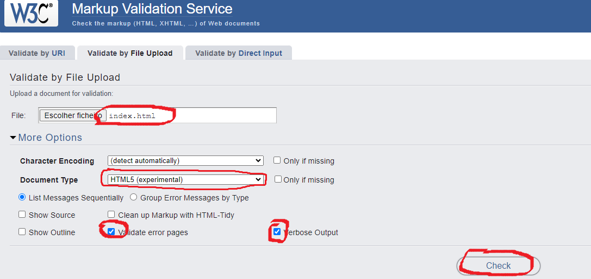
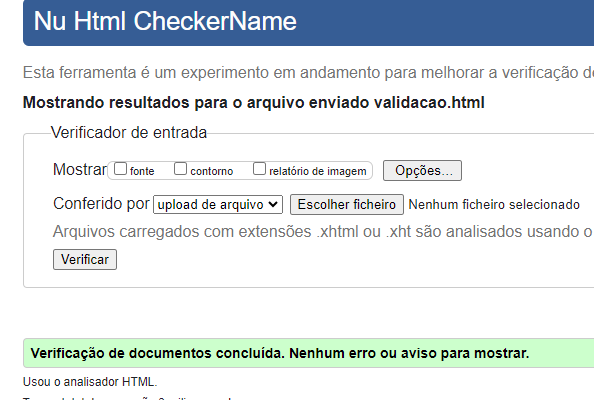

Estrutura Basica e semantica de um arquivo html
Uma estrutura basica e semantica deve seguir o padronização w3c
devmedia sobre tags
html 5.2
hecomendação do
uso de headings
Basicamente não existe uma forma certa de estruturar um html, mas o basico que devemos respeitar e é
primordial para que nosso arquivo seja lido corretamente pela engine
do google é que, a gente deve ter um h1 -> titulo principal que represente do que se trata
nosso arquivo (pagina) e se quisermos usar mais dele devemos criar seções nesse arquivo e inserilos. Por
exemplo usa a estrutura:
<header> cabeçalho </header>
<nav> navegação </nav>
<main>
<h1>Estrutura Basica e semantica de um arquivo html, h1 titulo principal da pagina </h1>
<p>Uma estrutura basica e semantica deve seguir o padronização w3c </p>
<p>esse arquivo por exemplo usa a estrutura: </p>
<section>
<h2>h2 dasection </h2>
</section>
<section>
<h2>Principais problemas </h2>
</section>
</main>
<aside> conteúdo que é tangencialmente relacionado ao conteúdo exibido na pagina </aside>
<footer> rodapé </footer>
E como eu sei se meu arquivo esta bem estruturado?
Bem existem ferramentas que você pode fazer a verificação como o link do validador de html


section#2
h2 da section#2
Todas as tags do html
a -> Hiperlink
abbr -> Abreviação
address -> Informações de Contato
area -> Hiperlink de mapa de imagem
article -> Artigo
aside -> Conteúdo lateral
audio -> Arquivo de áudio
b -> Texto em negrito
base -> URL base
blockquote -> Bloco para citações
body -> Corpo do documento
br -> Quebra de linha
button -> Botão
canvas -> Espaço reservado para gráficos dinâmicos
caption -> Legenda
cite -> Usado para citações de trabalhos
code -> Reservado para códigos
col -> Coluna da tabela
colgroup -> Grupo de coluna da tabela
command -> Comando
datalist -> Opções predefinidas para outros controles
dd -> Descrição ou valor
del -> Texto excluído
details -> Controle para informações adicionais sob demanda
dfn -> Definindo instância
div -> Bloco genérico
dl -> Lista de descrições
dt -> Termo ou nome
em -> Ênfase (itálico)
embed -> Ponto de integração para plug-ins
fieldset -> Conjunto de controles de formulário relacionados
figcaption -> Legenda de uma figura
figure -> Figura com legenda opcional
footer -> Rodapé (parte inferior da página)
form -> Formulário
h1, h2, h3, h4, h5, h6 -> Título
head -> Armazena metadados de documento
header -> Cabeçalho exibido na página
hgroup -> Grupo de título
hr -> Linha horizontal
html -> Elemento raiz
i -> Itálico (atribui importância ao item)
iframe -> Permite que outras páginas sejam embutidas dentro de uma página.
img -> Imagem
input -> Controle de entrada
ins -> Texto inserido
label -> Legenda para itens de formulários
legend -> Título ou legenda explicativa
li -> Item da lista
link -> Permite relacionamentos entre documentos
map -> Definição de mapa de imagem
mark -> Texto marcado (destacado)
menu -> Permite a inserção de itens
meta -> Metadado
meter -> Medidor escalar
nav -> Grupo de links de navegação
noscript -> Carrega um conteúdo diferente caso o navegador não suporte scripts
object -> Conteúdo externo genérico
ol -> Lista ordenada
optgroup -> Grupo de opções
option -> Opção de uma caixa de seleção (select)
output -> Resultado do processamento de um formulário
p -> Parágrafo
param -> Parâmetros de inicialização para plug-ins
pre -> Texto pré-formatado
progress -> Indicador de progresso
q -> Pequena citação de outra fonte
s -> Armazena conteúdos que não são mais relevantes para o documento, sendo então eliminados
script -> Permite a adição de scripts
section -> Bloco reservado para representar seções
select -> Caixa de seleção de um formulário
small -> Letras pequenas
source -> Permite várias fontes de áudio e vídeo
span -> Container para texto
strong -> Grande importância (negrito)
style -> Permite alterar o estilo
sub -> Subscrito
summary -> Utilizado em sumários e legendas
sup -> Sobrescrito
table -> Tabela
tbody -> Grupo de linha de uma tabela
td -> Célula de uma tabela
textarea -> Área para entrada de texto
tfoot -> Grupo de linha do rodapé de uma tabela
th -> Célula de cabeçalho de uma tabela
thead -> Grupo de título de uma tabela
time -> Data e/ou hora
title -> Título do documento
tr -> Linha de uma tabela
track -> Faixa de mídia suplementar
u -> Texto deslocado com estilo convencional com um sublinhado
ul -> Lista não ordenada
var -> Variável
video -> Vídeo
wbr -> Insere uma quebra de linha (se necessário)